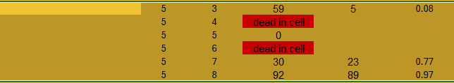

3 Data Management
3.1 Learning Objectives
By the end of this chapter, you will be able to:
Understand the limitations with messy/inconsistent data
Apply a set of rules to maintain a well organised spreadsheet
Write a simple data dictionary
Question
What has been your biggest spreadsheet headache?
-
Have you ever struggled to understand a spreadsheet because it has:
- Inconsistent names
- Unclear codings
- Notes or annotations without clear meaning
3.2 What makes a well organised spreadsheet?
Question
What are the issues with this dataset?
3.2.1 Example
Even though are data is extremely messy, and has a lot of inconsistencies - we can clean and reformat our data with clear code.
By keeping our data cleaning and tidying to the commmand line we ensure that our work is completely reproducible, with a set of documented steps available at all times.
library(readxl)
data_ranges <- c("A3:F15", "I3:N15", "Q3:V9") # gather each table as a data range
lines <- c("A","B","C") # set names for each experiment
clean_data <- map2_dfr(data_ranges, lines, ~ read_excel("data/raw/Data.xlsx", # combined all three tables in one tidy dataframe
range = .x,
na = c("ND", "-"), # choose characters that match NA
.name_repair = janitor::make_clean_names) |> # standardise names
mutate(line = .y) # add line information to data
)
clean_data |>
mutate(genotype = str_remove(genotype, "A-")) |> # fix genotype names
fill(genotype) # fill in blanks for genotype in line C| genotype | tray | sex | larvae | pupae | adults | line |
|---|---|---|---|---|---|---|
| WT | 6 | male | 200 | 101 | 100 | A |
| WT | 6 | female | 200 | 93 | 92 | A |
| WT | 5 | male | 200 | 108 | 108 | A |
| WT | 5 | female | 200 | 85 | 84 | A |
| HET | 4 | male | 200 | 92 | 91 | A |
| HET | 4 | female | 200 | 95 | 95 | A |
3.3 Data Organisation
Based on Broman & Woo (2018), Data Organization in Spreadsheets,
Reproducibility in R begins long before you load a file. Poorly structured data silently corrupts analysis, whereas disciplined organization lets you import, wrangle, and model without ad hoc cleaning
3.3.1 Consistency
Principle: Every categorical code, variable name, and missing-value marker must be used consistently. Inconsistency leads to type coercion, ambiguous factors, and failed joins.
- Inconsistent
| id | sex | glucose |
|---|---|---|
| 1 | male | NA |
| 2 | Male | 5.2 |
| 3 | M | 6.1 |
| 4 | female | 5.7 |
| 5 | F |
- Consistent
3.3.2 Variable and file naming
Principle: Names are part of your analytical grammar. They must be readable, regular, and machine-safe.
-
Do:
Keep your filenames to a reasonable length
Use underscores and hyphens for readability
Start or end your filename with a letter or number
Use a standard date format when applicable; example: YYYY-MM-DD
Use filenames for related files that work well with default ordering; example: in chronological order, or logical order using numbers first
2025_04_10_lineA_fecundity_rep2.csv
2025_04_10_lineA_fecundity_analysis.R
-
Don’t:
Use unnecessary additional characters in filenames
Use spaces or “illegal” characters; examples: &, %, #, <, or >
Start or end your filename with a symbol
Use incomplete or inconsistent date formats; example: M-D-YY
Use filenames for related files that do not work well with default ordering; examples: a random system of numbers or date formats, or using letters first
4102020marchfecundity<workinprogress>.R
_20210320*newlineinfo.csv
firstfile_for_analysis.RSee Chapter 8
3.3.3 Dates and Times
Principle: Always store dates in a consistent format e.g. ddmmyyyy
See Chapter 12
3.3.4 One variable per column
Principle: Each cell holds one atomic value; never embed multiple attributes in one field.
See Appendix C
- Not this:
| id | combined |
|---|---|
| 1 | adult_male |
| 2 | juvenile_female |
| 3 | adult_female |
- But This:
3.3.5 Rectangular layout
Principle: Keep your data rectangular: one header row, variables in columns, observations in rows.

3.3.6 Preserve Raw Data
Never alter the raw data collection files, every time this occurs errors can be introduced and they may not be trackable.
Make backups!
3.3.7 No Excel formatting as Data
Principle: Encoded information via colour blocks or fonts are invisible to R and ambiguous to other users.

3.3.8 Metadata and Data Dictionaries
Principle: Every dataset requires a companion dictionary documenting meaning, units, and type.
- Example data:
- A simple data dictionary:
3.3.9 Validation Checks
-
Every import should be followed by automated sanity checks
Are there fewer eggs hatching than eggs laid?
Are there negative valuse for body weight?
see ?sec-validate
3.3.10 File formats and version control
- Where possible use plain text (csv/tsv) and version control for transparency
3.4 Summary
Disciplined data organization eliminates ambiguity, allows seamless import into R, and ensures that analysis code represents all transformations transparently.
Having a set of company values around data quality and standardisation where data quality is everyones responsibility helps prevent errors, and reduce the risk of information being lost when researchers transition across to new roles.
We should all be data detectives!